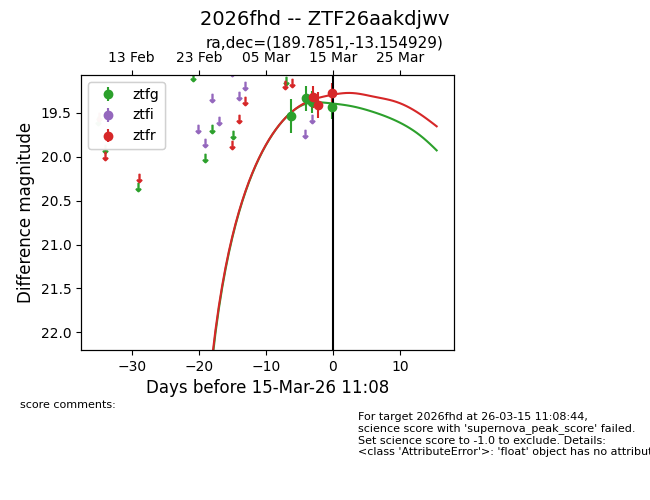
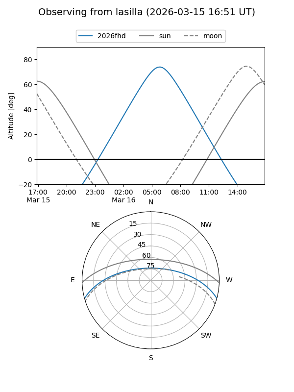
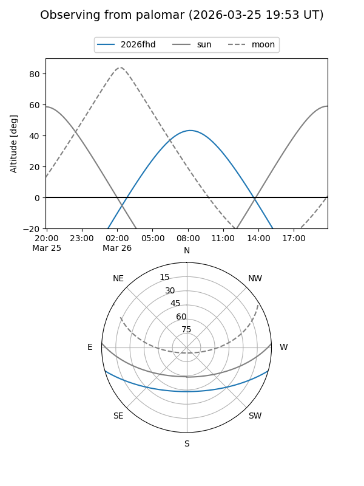
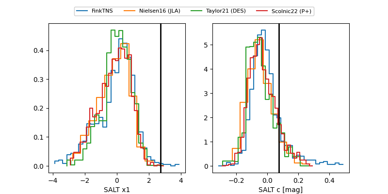

2026fhd
Target 2026fhd at 2026-03-15 11:10
Aliases and brokers:
FINK: link
Lasair: link
ALeRCE: link
TNS: link
YSE: link
alt names
ZTF26aakdjwv (ztf,fink_ztf)
2026fhd (tns,yse)
Coordinates:
equatorial (ra, dec) = 189.7851,-13.15493
equatorial (HMS+DMS) = 12:39:08.44,-13:09:17.74
galactic (l, b) = (298.3095,+49.60642)
Flags:
Photometry:
last ztfg=19.43, ztfr=19.27
4 ztfg, 3 ztfr detections
Lightcurve

Visibility


Additional plots
